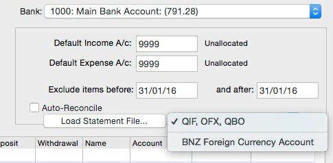
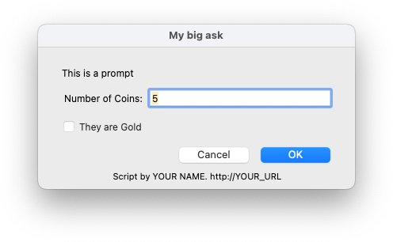

See Also:
CreateTable: Create an
empty accumulator table Sort: Sort a
delimited tabular string
TableAccumulate:
Accumulate numeric column data for a key TableAccumulateColumn:
Accumulate data in one column for a key TableFind: Look up a key in the
table
TableGet: Extract data for a key or
index found with TableFind
Trim (string [,
boolNewlinesAndTabsToo])
Result Type: Text
Definition: Returns string with leading and trailing
spaces removed. From v8.1.5 you can pass true for the optional second
parameter to also trim newlines and tabs).
Examples:
Trim(" Bang! Bang! ")
returns “Bang! Bang!”.
See Also:
Dice: Get a subcomponent of a
delimited tabular string Head: Get some
elements from the start of a delimited string Left: Get characters from the
start of a string
Mid: Get characters from the middle of a
string Regex_GetMatches: Find tokens using
a regular expression Regex_Match: Test whether a string
matches a regular expression Regex_Replace:
Replace text in a string using a regular expression
Regex_Search:
Find the first match of a regular expression in a string Regex_SearchStr: Find the first match of a
regular expression in a string and
return the matching string
RemoveLeading: Remove characters from
the start of a string RemoveTrailing:
Remove characters from the end of a string Replace: Replace matching text in a string
with new text Right: Get characters from
the end of a string
Slice: Get a component of a delimited
string
Tail: Get
some elements from the end of a delimited string
TypeOf (variable)
Result Type: Number
Definition Returns a number indicating the type of
the variable parameter.
Constant
|
Notes
|
Example
|
TypeText
|
Variable is a string
|
s= "3.141"
typeof(s) // TypeText
|
TypeNumber
|
Variable is numeric
|
n = 3.141
typeof(n) // TypeNumber
|
TypeDate
|
Variable is a date
|
n = '6/7/17' typeof(n) // TypeDate
|
TypeTable
|
Variable is a table
|
t = createTable() typeOf(t) // TypeTable
|
TypeSelection
|
Variable is a selection
|
s = createSelection("name", 1) typeof(s) // TypeSelection
|
TypeArray
|
Variable is an array
Scripts only
|
let a = createArray() typeof(a) // TypeArray
|
TypeHandle
|
Variable is a handle Scripts only
|
Let t = GetListHandle (w, "By Item")
typeof(t) // TypeHandle
|
Note Arrays and handles are only available in
scripts.
See Also:
SysLog: Write message to
MoneyWorks_Gold.log
_NTDump: Get a textual dump of identifiers and
values from the MoneyWorks nametable
Unicode (string)
Result Type: Number
Definition: Opposite of Char(). Converts the
character (first char of string) to its numeric unicode codepoint.
Example:
UniCode("élan")
returns 233, being the unicode codepoint for "é"
UnionSelection
(sel1, sel2 | searchxExprText, [sortExpr], [descending])
Result Type: Selection
Definition: Creates a union of the two selections
(which must be from the same internal file). The second parameter can be
specified as an existing selection, or as a search that results in a
selection. The resultant selection can be optionally sorted in the same
way as createSelection().
Example: If sel1 is a selection created by
createSelection("transaction", "type=`CP`") ,
i.e. of cash
payments
createSelection("transaction", "type=`CP` or type =
unionSelection(sel1, "type=`CR`")
returns a selection containing both cash payments and receipts, and
is equivalent to
URLEncode (text [, optDelim])
Return type: text
Definition: Returns a URL-encoded version of the
supplied text. Specifically, any
non-alphanumeric characters are converted to %xx
In MoneyWorks 9 and later, you can supply an optional single-byte
delimiter to use as a hex delimiter instead of the default %. E.g. for
encoding mail body content for SMTP you would use URLEncode(body,
"=")
`CR`)
unionSelection(sel1, "type=`CR`", "transdate")
Same as previously, except the selection is sorted into ascending
order of transaction date (for descending order, pass a fourth parameter
with a value of 1).
See Also:
CreateSelection:
Create a selection of records
DisplaySelection:
Display standard list window for a given selection of records
IntersectSelection:
Intersect a selection with the result of another search RecordsSelected: Count records in a selection
or resulting from a (meta)
search
SumDetail:
Add up a field for details matching a search SumSelection: Add up a field for records
matching a search
Upper (string)
Result Type: Text
Example:
"api.php?arg=2016%2f12%2f15"
alert("api.php?arg=" + URLEncode("2016/12/15"))
See Also:
Base64Decode: String from a base64
encoding Base64Encode:
Base64 of a string
Curl_Close:
Finish with a CURL session Curl_Exec: Execute a CURL session
Curl_GetInfo: Get information about a
CURL transfer Curl_Init: Start a
CURL session
Curl_StrError: Get an error message from
a CURL object
Val (exprText [, bRunOnServer])
Result Type: The result of exprText
displays
Definition: Returns string converted to upper
case.
Examples:
Upper("Bang!")
returns “BANG!”.
See Also:
Lower: Lowercase a string
Proper: Uppercase initial letters of
words in a string
Definition: Takes a text string containing an
expression. Returns the result of the expression. This provides a way of
deferring the evaluation of expensive calculations, or ones with side
effects, on either side of an If function.
Examples:
val(if(c, "calculate:nthPrime(n)", "0"))
will only calculate the nth Prime if c is true. Without the val() the
(presumably expensive) calculation would happen regardless of the value
of c, with the result being discarded if c was false. This is because
if() is a function, so all parameters will be evaluated.
Definition: Returns the year of date.
In MoneyWorks 9.1.8 and later, there is also an option to have the
expression evaluated on the server when using MoneyWorks Datacentre.
This is useful if the expression is a very database-intensive function
such as Analyse() or SumSelection(). The expression will only be
evaluated on the server if the network latency is high. Pass true for
the second parameter to enable evaluaiton on the server. Note that you
cannot call script handlers using this mode.
Examples:
Year('7/10/6')
See Also:
— returns 2006.
WeekOfYear (Date)
Result Type: Number
Definition: Returns ISO 8601:1988 week number for a
date
CalcDueDate: Calculate a due date for
given terms CurrentPeriod: Get the current
period number Date: Convert d,m,y to a
date
DateToPeriod: Convert a date to a
period DateToText: Format a date as a
string Day: Get the Day of month of a date DayOfWeek: Get The weekday of a date
FirstUnlockedPeriod: Get the oldest
period that is not locked Month: Get the month
of a date
Examples:
WeekOfYear('2020-03-23')
See Also:
— returns 12.
PeriodName: Get the Name of a period PeriodOffset: Difference between
two periods PeriodToDate: Get the end date
of a period
CalcDueDate: Calculate a due date for
given terms CurrentPeriod: Get the current
period number Date: Convert d,m,y to a
date
DateToPeriod: Convert a date to a
period DateToText: Format a date as a
string Day: Get the Day of month of a date DayOfWeek: Get The weekday of a date
FirstUnlockedPeriod: Get the oldest period
that is not locked Month: Get the month of a
date
PeriodName: Get the Name of a period PeriodOffset: Difference between
two periods PeriodToDate: Get the end date
of a period TextToDate: Parse a string to a
date
Time: The current Datetime TimeAdd: Add seconds to a DateTime
TimeDiff: The difference, in seconds,
between two DateTimes Timestamp: A
timestamp string
Today: Today's date Year: Year of a date
Year (date)
Result Type: Number
TextToDate: Parse a string to a date Time: The current Datetime TimeAdd: Add seconds to a DateTime
TimeDiff: The difference, in seconds,
between two DateTimes Timestamp: A
timestamp string
Today: Today's date
WeekOfYear: Convert a date to a week
number
Script-only Functions
Some of the intrinsic functions in MoneyWorks are only appropriate
for (and only available to) MWScript scripts. These functions cannot be
used in forms, reports (except in an embedded report script control), or
in-field calculations.
AddListLine (listRef)
Adds a line to the end of an editable list, provided the list is
mutable. You’ll get an error if you try to add a line to e.g. a posted
transaction. Returns the new row number.
See Also:
DeleteListLine: Delete a row from an
editable list
EnterCell:
A cell in an editable list has just gained focus ExchangeListRows: Swap
rows in an editable list ExitedCell:
A cell in an editable list has just lost focus
GetActiveListColumn: Get
the column number of an edit list that has keyboard focus
GetActiveListRow: Get the row
number of an edit list that has keyboard focus
GetListField: Get the text of an
editable list field
GetListHandle: Get
list handle from window handle and list ident GetListLineCount: Get number of rows in a
list
GetListName: Selected tab name for
Transaction entry details list MergeOrderLines: Merge
order lines (opposite of SplitOrderLines) SetListField:
Set the text of an editable list field
SortListByColumn:
Sort an editable list by a column
SplitOrderLine: Duplicate a line item on
an order, splitting the order qty (for serial entry)
ValidateCell:
Control whether the content of a cell is acceptable and the cell can be
exited
AddStatementTransaction
(ref, date, tofrom, desc, amt)
Definition: Use this function to add a transaction
to a bank statement import. The function only works when a Load
Statement dialog is open, so can only be used from a statement loading
script.
Statement Loading Scripts
Statement Loading in MoneyWorks supports well-defined bank statement
formats (QIF and OFX/QBO). Some banks only provide CSV format and the
problem is that CSV is not a format as such, but merely a field
delimiter specification (namely commas between fields). The fields
themselves will be arbitrary. Bank statements in CSV format will differ
between banks. Statements may also be available in other formats. This
is where Statement Loading Scripts are useful.
You may place an external .mwscript file in MoneyWorks Standard
Plugins/ Scripts/Bank Statement Importers. These scripts will show
up as format options in the Bank Statement loading window...

When you select the importer script and click Load Statement File,
MoneyWorks will load your script and execute the Load handler.
The Load handler should open a text file, parse it, and call
AddStatementTransaction for each transaction it finds in the file.
And here is an example for importing tab-delimited data scraped from
a Kiwibank PDF bank statement using Tabula.
constant meta = "Kiwibank scraped PDF statement as Tab separated. http://cognito.co.nz"
on TrimQuotes(str)
if Left(str, 1) = "$"
let str = Right(str, Length(str) - 1) endif
if Left(str, 1) = "\"" and Right(str, 1) = "\"" return Mid(str, 2,
Length(str) - 2)
endif return str
end
on Load
foreach line in textfile "" file open dialog
// no filename -> present a
let transdate = TrimQuotes(Slice(line, 1, "\t")) // slice
automatically trims whitespace
let procdate = TrimQuotes(Slice(line, 2, "\t")) let card =
TrimQuotes(Slice(line, 3, "\t"))
let desc = TrimQuotes(Slice(line, 4, "\t"))
Definition: The Alert function displays an alert
window with up to 3 buttons.
let credit = TrimQuotes(Slice(line, 5, "\t")) let debit =
TrimQuotes(Slice(line, 6, "\t")) let amt = TextToNum(credit) -
TextToNum(debit)
if transdate = "" // skip currency conversion lines continue
endif
AddStatementTransaction("", TextToDate(transdate), desc,
"", amt)
endfor
end
Both message strings will be included in the alert box (on Mac, the
first message is larger and bolder).
 ok , cancel , and are optional
button names. If supplied, buttons with
ok , cancel , and are optional
button names. If supplied, buttons with
other
Availability: MoneyWorks 7.2 and later (including
Express and Cashbook).
those names will be included. If those parameters are omitted, the
default alert has two buttons ("OK", and "Cancel"). To get just one
button, pass "" for the Cancel button name. To get 3 buttons, provide
names for all three.
If is provided, the alert will auto-dismiss after that many
seconds,
timeoutsecs
as if the Cancel
button was pressed.
AddSafePath (prompt)
Result type: string
Definition: Displays a folder chooser dialog for the
user to add a folder to the "safe paths" list in the preferences.
The return value is the folder path, or empty string if the user
cancels.
Availability: MWScript in MoneyWorks 9.1 and
later.
The return value is a button number. 1 is OK, 2 is cancel, 3 is
other. If the alert timed out, the result is 2.
Example:
let r = Alert("Approve transaction?", "You have the power",
"Approve", "Don't Approve")
See Also:
CreateFolder: Create a new folder
File_Close: File functions for
creating/reading/writing text files File_GetLength: File length in bytes
File_GetMark: Get current
read/write position File_Move:
Rename/move a file
File_Open: Open a file
File_Path: Get the full path of an open
file File_Read: Read
text from current position
File_ReadLine: Read to end of line from
current position File_SetMark: Set Current
read/write position File_Write: Write text at
current position WriteToTempFile: Create a
temp file containing the string
Alert
(message1, message2, ok, cancel, other, timeoutsecs)
Result
type: number
Help button: Alerts posted by this function in a
script will include a help button. Clicking that help button will
display another alert that identifies the script name and its meta
string. Clicking the help button in that alert will bring you
to this manual page via the manual search function. Clicking the help
button in an alert posted from a non-script expression will go directly
to the manual search.
Getting out of an endless alert loop: If you have
written a script that is continuously posting alerts in a loop, you can
force the script to stop by holding down the Control key when you click
one of the alert's (non-help) buttons (provided that you have the
Scripting privilege).
Availability: available anywhere, but should usually
only be used from MWScript handlers.
See Also:
Ask: Very simple dialog box with
controls ChooseFromList: Very simple list
dialog box Say: Speak some text
AppendColumnToStdEditList
(listHandle,
columnFieldName, columnDefinition)
Result Type: none
Definition: Call from a TweakColumnList handler to append a custom
column to a standard edit list. Pass the list handle that is provided to
the TweakColumnList handler. The columnFieldName may be the name of a
script-mutable field of the appropriate table (either Details or
JobSheet), or it can be a
"tagged field" using a short name of your choice prepended by an
underscore. Such fields are automatically stored in the TaggedText field
of the record. The columnDefinition defines the column heading, width in
points and alignment of the column (using the same notation is for InsertEditListObject)
Example:
on TweakColumnList:F_TRANS(win, list) AppendColumnToStdEditList(list,
"Detail.Custom1", "Cust1|40|L") AppendColumnToStdEditList(list,
"_myfield", "Mine|60|L")
end
Availability: available within MWScript handlers in
v9 and later. Use only from a TweakColumnList handler.
See Also:
TweakColumnList: Use to add custom
columns to a standard editable list.
Result Type: none
If the item string is "#COLOUR" you will get a colour menu (using the
transaction colour names by default). For a colour menu using the custom
colour names for a particular table, append the table name after a
colon. e.g.
Availability: available within MWScript
handlers.
"#COLOUR:account"
See Also:
DeletePopupItems: Remove items from a
popup menu
Ask (controlType, name,
value, definition, …)
Result type: array
Definition: The Ask function provides a simple
custom UI for data capture. It takes a variable number of parameters
that define the custom controls to appear in the dialog box. The general
form is:
ControlTypes are “static”, “text”, “password”, “number”, “date”,
“checkbox”, “popup”, “radio”, “title” and “invis”. These are
case-sensitive strings. If you use any other string for controlType,
that will be taken as the name (i.e. content) for a static text control.
The text, password, number, date, radio, and checkbox types have a name
and a value (static just has a name). The popup type has a name, a
value, and a definition. The title type has a single value, which will
be used as the window title. The function knows how many following
parameters to expect after each controltype parameter.
The buttons are always OK and Cancel.
Example:
Definition: Adds items to the popup menu control
with id as specified
itemID
let result = Ask("This is a prompt", "number", "Number of Coins",
5,
"checkbox", "They are Gold", 0, "title", "My big ask")
by the itemString . The string should be a semicolon-delimited list
of item
(-
 names. Any item name beginning with a ( will
be disabled. Use separator item.
names. Any item name beginning with a ( will
be disabled. Use separator item.
for a
Example: AppendPopupItems(windowRef, "M_MYPOPUP",
"Item one;Item two;(-;(Disabled;(-;Last")
If the item string is "#PER" the menu will be populated with
periods.

The function result is an associative array whose keys are the
control names (with spaces replaced by underscores, in the same manner
as custom controls for reports). There is also a key-value with key "ok"
and value 0 or 1 denoting whether the OK button was clicked.
e.g. result["Choose_one"] → "bar" result["Number_of_Coins"] → 5
result["They_are_Gold"] → 0
To implement validation handlers for the Ask dialog box, you must
pass an invisible control with the name "ident", thus:
... "invis", "ident", "com_yourdomain_My_Ask"
This defines an invisible control with the special name "ident" which
becomes the dialog box's symbolic identifier for the purposes of message
interception.
IMPORTANT: Since every Ask dialog will be different, but all loaded
scripts receive UI messages for dialogs, the handlers for validating
them must be unique across all scripts that could possibly be installed
in the same document).
You MUST choose a globally unique identifier (do not use the one in
this example). It is recommended that you use the reverse domain name
convention to derive a globally unique name. For example, I would use
names in the form nz_co_cognito_rowan_myscript_ask. This should provide
reasonable assurance that no-one else's scripts will try to trap
messages for the ask dialog in my script.
Keep in mind the 63-character limit on handler names.
Example:
on Load
let a = Ask("text","Some Text","Default","invis","ident",
"nz_co_cognito_MyAsk")
if a["OK"]
alert(a["Some_Text"])
else
say("cancelled") endif
end
on ValidateField:nz_co_cognito_MyAsk:Some_text(winref, fieldID,
value)
say(value)
end
Note: Ask() parameters will be truncated to 255
characters. To include a long menu, use AppendPopupItems
in the Before handler of the Ask dialog. For example, the
following will display a menu of available invoice forms:
on Before:unique_MyAsk(w)
let formlist = "None;(-;"+replace(GetPlugIns("forms", "all", "invc"),
"\n", ";")
AppendPopupItems(w, "Invoice", formlist)
end
on Load
let result = Ask("Choose Form", "popup", "Invoice", "", "",
"invis","ident", "unique_MyAsk")
end
Availability: within an MWScript handler
See Also:
Alert:
Display an alert with up to 3 buttons ChooseFromList: Very simple list dialog
box
Say: Speak some text
Authenticate
(username, password [, privilegeName])
Result Type: Boolean (0 or 1)
Definition: Returns 1 if the user exists and the
password is correct for that user, otherwise returns 0. If a privilege
name string is supplied, then the user must also have that privilege to
get a true result.
You might use this function to allow temporary privilege escalation
within a script, by asking for an administrator's credentials. Your
script is responsible for enforcing privilege restrictions in this way
when you perform privileged operations within an elevated handler.
Availability: available within MWScript
handlers.
See Also:
Allowed: Test a named privilege
for the current user
AutoFillAcctDeptField
(windowRef, itemID, bWantDept)
Definition: Invokes an autocomplete dropdown in a
text entry field. Pass for bWantDept to require a department code for
departmentalised accounts.
true
AutoFillField (windowRef, itemID, tablename)
Definition: Call this from an ItemHit handler for a
code field to invoke an autocomplete dropdown. TableName may be
one of "account", "ledger", "product", "job", "department", "name",
"list".
Example: Autocompleting against values from a
database table.
on ItemHit:F_TRANS:E_USER1(w, f) AutoFillField(w, f,
"department")
end
Programmed
autocomplete for a validation list:
As of v8.1.8 the third parameter may be a mnemonic indicating a
validation list. I.e. a string of the form "List:listname" where
listname is the name of a validation list. This allows list
validations to be applied programmatically for all users rather than
manually setting up autocompletion for fields for each user.
on ItemHit:F_TRANS:E_USER1(w, f)
AutoFillField(w, f, "List:branches") // where branches is a defined
validation list
end
Note: the list name in "List:branches" above is case-sensitive. Be
sure to match the case of your list name.
Call this from an
ItemHit
Example:
handler for an account code field.
Supplying full calculated autocomplete data:
Also as of v8.1.8 the third parameter may be an associative array of
codes and descriptions, or a specially formatted tab-delimited table
with entries in the form: space code tab space
description newline. In these cases the supplied validation
data is used to match the input for autocompletion.
Availability: available within MWScript
handlers.
on ItemHit:F_MYWINDOW:E_MYCODE(windowRef, itemID)
AutoFillAcctDeptField(windowRef, itemID, true)
end
property mytext
// autocomplete only AUD control accounts on Load
let mytext = Find("account.` `+code+`\t `+description", "currency =
`AUD`", 9999, "\n")
end
See Also:
AutoFillField: Apply auto-complete to a
code edit field CheckCodeField:
Validate a code edit field ValidateFieldWithValidationString:
Programmatically apply a custom
validation expression to a field
on ItemHit:F_TRANS:E_USER1(w, f) AutoFillField(w, f, mytext)
end
In v9.0.1 and later, the itemID may be a list item (or a list
handle), in which case this will validate the active cell (if any) of
that list. This is particularly useful when you have added custom
columns to a list and need to validate them.
If building autocomplete data this way, you should do it once per
session and cache it in a property. Do not build it every time you call
AutoFillField as that will not scale.
Availability: available within MWScript
handlers.
See Also:
AutoFillAcctDeptField:
Apply auto-complete to a departmental account code edit field
CheckCodeField:
Validate a code edit field ValidateFieldWithValidationString:
Programmatically apply a custom
validation expression to a field
ValidateFieldWithValidationString
(windowRef, itemID, validationDefinition)
Definition: Call this from a
ValidateField handler for a code field to validate the field value
against an expression or a validation list. This is a programmatic
alternative to setting up a custom validation on the field for each user
in the UI.
See Also:
AutoFillAcctDeptField:
Apply auto-complete to a departmental account code edit field
AutoFillField: Apply auto-complete to a
code edit field CheckCodeField:
Validate a code edit field
CancelTransaction
(seqNum [, optionalDescription, optionalDate])
Result type: none
Definition: Cancels the transaction identified by
seqNum, if possible. An optional description and transaction date for
the cancellation may be supplied.
Availability: available within MWScript
handlers.
on ValidateField:F_TRANS:E_USER1(w, f, v)
return ValidateFieldWithValidationString(w, f,
"Expr:_value=`abc@`;must start with abc")
end
on ValidateField:F_TRANS:E_USER2(w, f, v)
return ValidateFieldWithValidationString(w, f, "List:branches") //
validate against the validation list named branches
end
Note that this only validates the field value on exit; it does not
offer autocomplete. To also implement autocomplete, use
AutoFillField.
ChangePrimaryKeyCode (table, oldCode, newCode)
Result type: Boolean
Definition: Change a tax rate's identifying code and
update all usages in the database. Requires single user mode.
Returns true on success. On failure (false return), check
GetLastErrorMessage() for an explanation.
In MoneyWorks 9.1.5, this function supports only changing tax codes.
It will be expanded in future.
Example: ChangePrimaryKeyCode("taxrate", "N",
"G")
Updates every instance of N tax code in the database to be G. This
may take some time.
Availability: MWScript in MoneyWorks 9.1.5 and
later.
Availability: available within MWScript handlers in
v8.1.8 and later.
CheckCodeField
(windowRef, itemID, tableName, ...)
Definition: This function has 4
variants for the different codes that it will check.
If the text field identified by windowRef+itemID contains a valid
code for the named table, then the function returns true without doing
anything further.
If the code is not valid, then the function will pop up the standard
Choices window for that table. If the user selects a record, then the
function returns true. If the user cancels, the function returns
false.
Variants:
CheckCodeField(windowRef, itemID, "account", boolWantDept,
boolAllowDept, optionalRequiredType)
CheckCodeField(windowRef, itemID, "name", custType,
suppType)
CheckCodeField(windowRef, itemID, "product",
boolWantShipMeth)
CheckCodeField(windowRef, itemID, "job")
For "account", you can specify boolWantDept = true to require a dept
code for departmentalised accounts. You can specify boolWantDept false
and boolAllowDept if the field can have a departmentalised account
without the department code being present. The optionalRequiredType
parameter can be a two character account type code or system type code
or "**" for IN/EX accounts. If no type is specified, then any type
is allowed.
For "name" custType should be 0, 1 or 2 for not customers, customers
or debtors, respectively. SuppType should be 0, 1 or 2 for not
suppliers, suppliers
ValidateFieldWithValidationString:
Programmatically apply a custom validation expression to a field
ChooseFromList (prompt,
tabularText [, mode])
Presents the tabular data in a list, from which the user may select a
row. Return value is normally the text of the selected row.The optional
mode parameter can contain keywords that affect the behaviour of the
list:
"Drag" allows the user to reorder the list rows.
"All" will return all rows regardless of highlight (can combine
"drag,all").
"Multiple" allows multiple rows to be selected (cannot combine).
Availability: MWScript handlers
See Also:
Alert:
Display an alert with up to 3 buttons Ask:
Very simple dialog box with controls Say: Speak
some text
Clicks ()
Definition: Returns the current click count. For a
list with mode
fListMode_DoubleclickItemHit
ItemHit
or creditors, respectively. e.g. for Debtor codes only, specify
you can use this in an
handler to
CheckCodeField(windowRef, itemID, "name", 2, 0)
Use this function from a ValidateField or ValidateCell handler to
validate a code in the field.
Availability: available within
MWScript handlers.
See Also:
AutoFillAcctDeptField:
Apply auto-complete to a departmental account code edit field
AutoFillField: Apply auto-complete to a
code edit field
determine if the user double-clicked a row—Clicks() will return 2 in
this case.
Availability: available within MWScript
handlers.
CloseDocument ()
Closes or disconnects from the document. Returns 1 on success, 0 on
failure.
Availability: Available only to scripts loaded from
the Scripts folder. A document script cannot open another document,
since that would unload the calling script.
See Also:
OpenDocument: Open a document or
connection (use from external script)
CloseWindow (windowRef)
Result Type: none
Definition: Closes the window.
Availability: available within MWScript
handlers.
Availability: available in MWScript in v9 and later
when logged into a Datacentre server.
CreateArray ( [key, value, ...
])
Result type: array.
Definition: Without parameters, creates an empty
associative array object.
Associative arrays use the syntax arrayname[key], where key can be
any text up to 31 characters, an integer, or a date (internally,
integers and dates are represented as text formatted so that lexical
sort order matches numeric/date sort order). Data values can be any
other type.
let myArray = CreateArray() let myArray[0] = "thing"
let myArray["mykey"] = myArray[0] let myArray['31/1/12'] = 500
In the current implementation, insertion into an associative array is
O(N). Retrieval is O(log N).
CopyUserSettings (srcUserInitials,
destUserInitials)
Definition: Imposes settings from one user on
another user. This will replace the destination user's custom columns,
validations, selected filters etc. One or other of the parameters can be
the empty string, which implies the currently logged in user. If copying
settings to a user by specifying their login initials, they should not
be logged in at the time (attempting to do this will have no effect,
since the user's current settings will clobber the change when the log
out). A user can copy settings from another user to themselves while
logged in by specifying "" for the destUserInitials.
Example:
on UserLoggedIn
// if this user has a _donor tag in login.taggedText, grab settings
from that user
let tagged = Lookup(Initials, "Login.TaggedText") let settingsDonor =
GetTaggedValue(tagged, "_donor") if settingsDonor != ""
CopyUserSettings(settingsDonor, "")
let tagged = SetTaggedValue(tagged, "_donor", "")
// clear the donor tag so will not clobber again
ReplaceField("Login.TaggedText", "Initials =
`"+Initials+"`", tagged) endif
end
Arrays, like Tables, are always passed by reference, so if you assign
an array to another variable, or pass it as a parameter to a function,
you are not copying the array. If you want to copy an array, you must
allocate a new array with CreateArray and explictly copy all of its
members.
In MoneyWorks 9 and later, you can provide parameters for
initialising the array.
let myArray = CreateArray(0, "thing", "mykey", "thing", '31/1/ 12',
500)
syslog(myarray[0]) syslog(myarray["mykey"])
syslog(myarray['31/1/12'])
This is particularly useful for passing to functions that require an
array parameter. E.g. BeginXMLElement(xml, "import",
CreateArray("table", "transaction"))
Availability: available within MWScript
handlers.
See Also:
CountElements: Get the size of an
associative array DeleteElement:
Remove a key from an associative array ElementExists: Check if a key exists
in an associative array ParamsFromArray:
Expand array values to a variable parameter list
CreateFolder
(parentFolderPath, newFolderName)
Result type: Boolean
Definition: Creates a new folder in the specified
location.
parentFolderPath must be inside an existing "safe path"
directory.
Returns true to indicate success (the folder now exists, due to being
created or already existing), false for failure (the folder could not be
created or is not accessible).
Availability: MWScript in MoneyWorks 9.1 and
later.
See Also:
AddSafePath: UI to add a safe path to
the preferences File_Close: File
functions for creating/reading/writing text files File_GetLength: File length in bytes
File_GetMark: Get current
read/write position File_Move:
Rename/move a file
File_Open: Open a file
File_Path: Get the full path of an open
file File_Read: Read
text from current position
File_ReadLine: Read to end of line from
current position File_SetMark: Set Current
read/write position File_Write: Write text at
current position WriteToTempFile: Create a
temp file containing the string
Definition: A variant of CreateWindow for
displaying a list of records much like the built-in MoneyWorks list
windows.
The window's first control (object #1) should be a list object. It
will be replaced with a record list for the requested database table
named by the table parameter. The list will be filtered according to the
search string.
If recordFormID is not the empty string, then double-clicking a
record will automatically instantiate an instance of that window with
appropriate record locking so that you can read and (for allowable
tables) write records safely (see ReadCurrentRecordForWindow and WriteCurrentRecordForWindow).
The headingString is a tab-delimited list of column headings. Each
column heading may optionally be followed by specifiers for the column
width; and the column alignment. These specifiers are separated by
vertical bar characters (|).
headingString = Heading_Text | width * | alignment
The * after the width is optional and denotes that the column will
resize if the columns widths do not add up to the list width. Default is
80 and the first column is the resizable one by default.
Alignment can be one of 'L', 'C', 'R' for left, centre or right
alignment. Default is left.
Examples:
— a left aligned cell (by default, 80 points wide)
"My Heading"
— 100 points wide column
"My Heading|100"
— right-aligned column
"My Heading|80|R"
The columnsString is a tab-delimited list of custom column
calculations that may reference the field names for the database
table.
The optional modes can specify behaviour of the list. This is a
bitfield which can include a combination of the following constants
added together: fListMode_Selectable, fListMode_OnlyOne,
fListMode_DoubleclickAccept, fListMode_DoubleclickItemHit,
fListMode_ToggleSelection. If it is omitted, selectable is on my
default.
Windows automatically remember their last size and location (this
information is written into a file named script_id.properties . You can
set the values of the properties your_wind_id_left , your_wind_id_top ,
your_wind_id_right , and your_wind_id_bottom before instantiating the
window to override the size and location.
In v9 and later, you can provide an optional properties
associative array which will be used to initialise the properties of the
window (that you would otherwise set and get with SetWindowProperty
and GetWindowProperty. This removes the
need to use global properties to pass parameters to window handlers.
Note that to provide properties this way you must also provide a modes
parameter (use 0 if you don't need special modes).
Availability: available within MWScript
handlers.
See Also:
CreateWindow:
Instantiate a modeless custom window GetWindowProperty: Retrieve data previously
stored for a windowHandle ModalJobsheetEntryWindow: Run a modal Jobsheet
entry modify/create
window
ModalListWindow:
Instantiate a modal custom database table list window ModalTransactionWindow: Run a modal
transaction modify/create window ModalWindow: Instantiate a modal custom window
ReadCurrentRecordForWindow: Load a record
in custom UI, or tagged fields
in standard UI
SetWindowProperty:
Store data related to a window WriteCurrentRecordForWindow:
Save a record in custom UI, or save tagged
fields in standard UI
CreateWindow
(your_wind_id [, mode [, properties]])
Result Type: a windowRef
Definition: Instantiates a modeless window using the
UI form with identifier your_wind_id (i.e. the name you gave the form in
the script editor). The window will have a close box to close it.
The return value of CreateWindow will be a window handle. You can use
this to do further setup of controls in the window, and/or you can write
a Before
Availability: available within MWScript
handlers.
In v9 and later, you can provide an optional properties
associative array which will be used to initialise the properties of the
window (that you would otherwise set and get with SetWindowProperty
and GetWindowProperty. This removes the
need to use global properties to pass parameters to window handlers.
Note that to provide properties this way you must also provide a modes
parameter (use 0 if you don't need special modes).
See Also:
ModalJobsheetEntryWindow: Run a modal
Jobsheet entry modify/create window
ModalListWindow:
Instantiate a modal custom database table list window ModalTransactionWindow: Run a modal
transaction modify/create window ModalWindow: Instantiate a modal custom
window
Curl_Close (curlhandle)
Result Type: no return value
Definition: Releases the curl handle. Call this when
you are finished with the handle (if you fail to do so, it will be
garbage collected automatically when the script is unloaded).
Availability: available within MWScript
handlers.